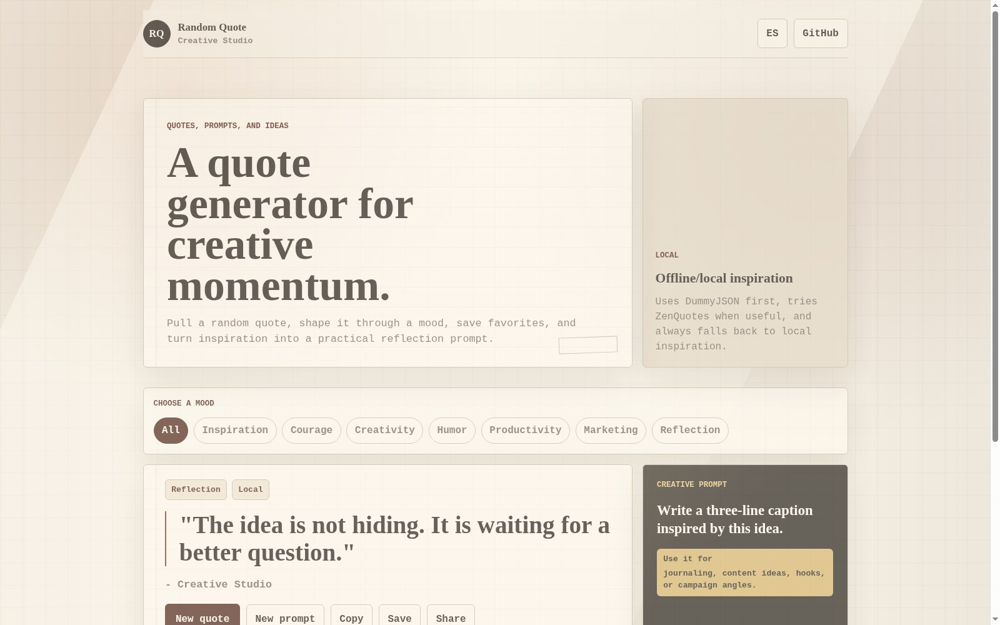
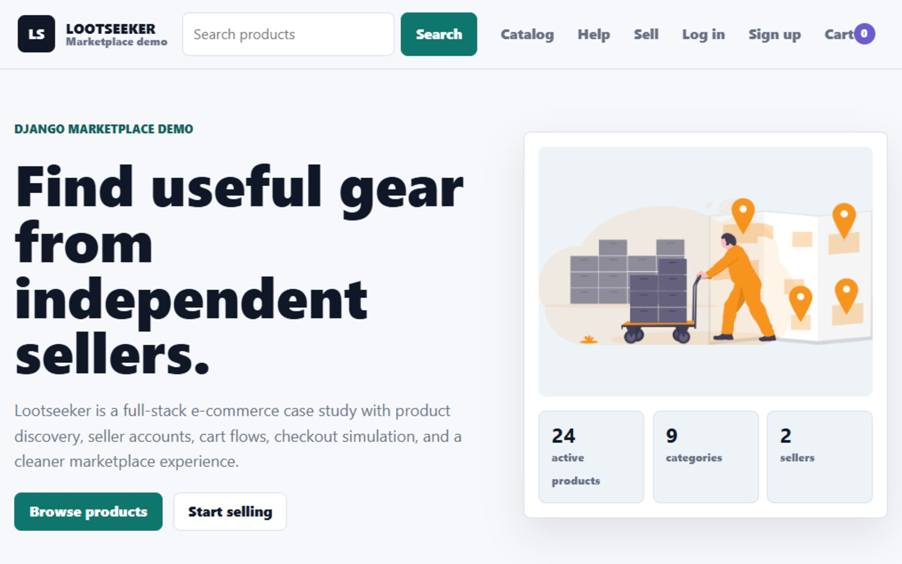

Product interfaces
Dashboards, workflows, and responsive screens that are easy to scan and practical to use.
Full-stack web developer
I build business tools and web products with clear interfaces, practical back-end thinking, and AI-assisted workflows where they help the work move faster without flattening the judgment.
About
I am a self-taught developer with a strong bias toward building, learning, and refining. My work combines front-end structure, back-end thinking, and AI-assisted iteration so each project can move from idea to working product faster.
I care about readable code, clear communication, responsive design, and keeping human judgment in control of architecture, product decisions, tests, and delivery.
Dashboards, workflows, and responsive screens that are easy to scan and practical to use.
Comfort with Python, Django, data flow, API contracts, and the logic that keeps products stable.
Using Codex and Claude to accelerate planning, implementation, refactor, documentation, and QA.
AI-assisted systems
I use AI agents like Codex and Claude to design marketing systems that move from strategy to publishable content faster: campaign concepts, characters, prompts, landing copy, visual directions, and reusable creative packs.
For Sap Sap-style projects, I help shape character-driven campaigns with story structures, 9:16 visual prompts, content packs, hooks, scripts, and asset planning that can scale across posts, ads, landing pages, and product education.
Systems for turning ideas into repeatable briefs, scripts, captions, prompts, and campaign assets.
Brand worlds, recurring characters, story arcs, and visual consistency for social-first marketing.
Landing pages, product messaging, automation-friendly assets, and interfaces that support growth work.
Selected product work
The main work is organized around useful systems: operations dashboards, AI marketing workflows, technical creative tools, and polished front-end products.
Featured case study
A browser-ready restaurant operations demo for tables, orders, kitchen flow, and shift metrics. It turns the original mobile app idea into a product recruiters can open and test.
Active tables
Open orders
Kitchen queue
Closed revenue
A workflow case study for character campaigns, prompt systems, content packs, and landing-ready assets.
Workflow note: agents support strategy, content structure, asset planning, and iteration.
View workflowA technical creative audio tool with sequencer, synth controls, MIDI-oriented thinking, and export flow.
Portfolio note: strongest as the next deployable technical case study.
Local build, deploy next
A polished bilingual microproduct with resilient quote APIs, local fallback, favorites, and creative prompts.
Workflow note: rebuilt from a broken API dependency into a more resilient product.
Open project
A modernized Django marketplace with product discovery, seller accounts, cart logic, checkout fallback, and environment-ready settings.
Case-study note: refreshed from a legacy learning build into a cleaner full-stack commerce demo.
Modernized Django storefront Open projectLearning lab
Stack
Codex, Claude, and agent-assisted systems for strategy, production, and iteration.
Structured prompts for visuals, scripts, landing copy, campaign assets, and creative direction.
Repeatable pipelines for hooks, captions, briefs, story packs, and publishing-ready ideas.
Narrative worlds, recurring characters, 9:16 story flows, and brand-consistent visual planning.
Contact
Send me a message and I will get back to you with a clear next step.